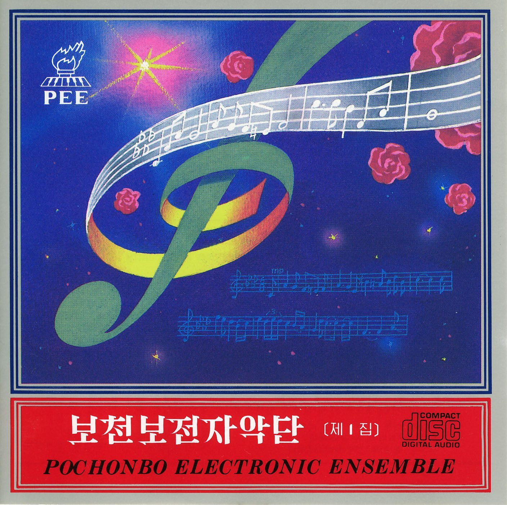
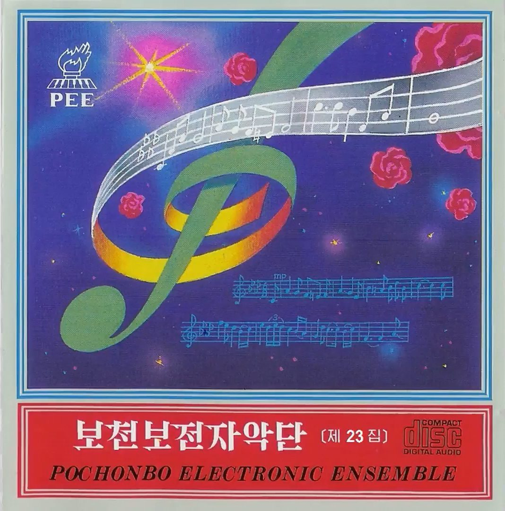
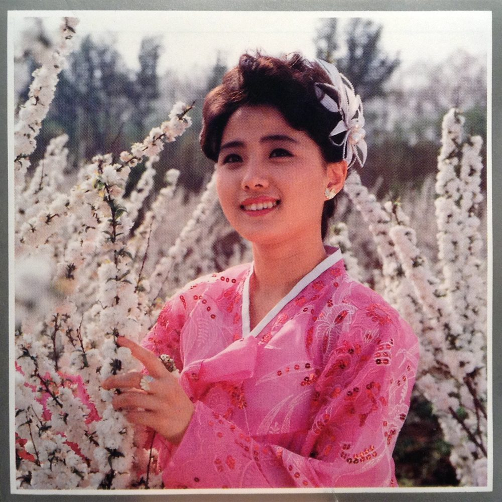
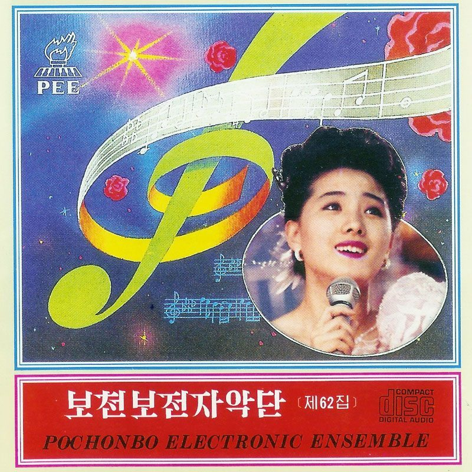
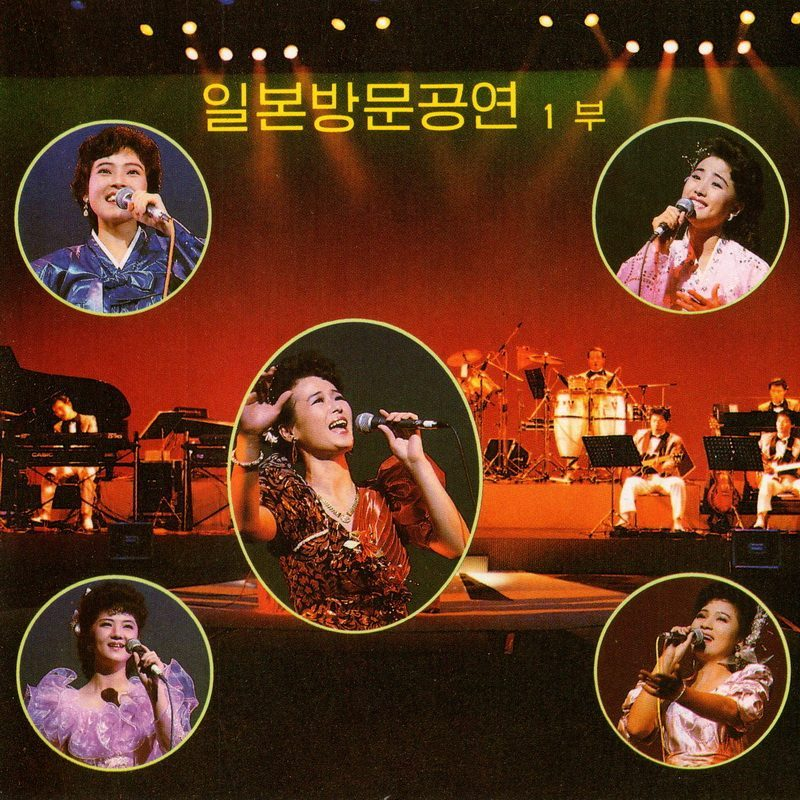
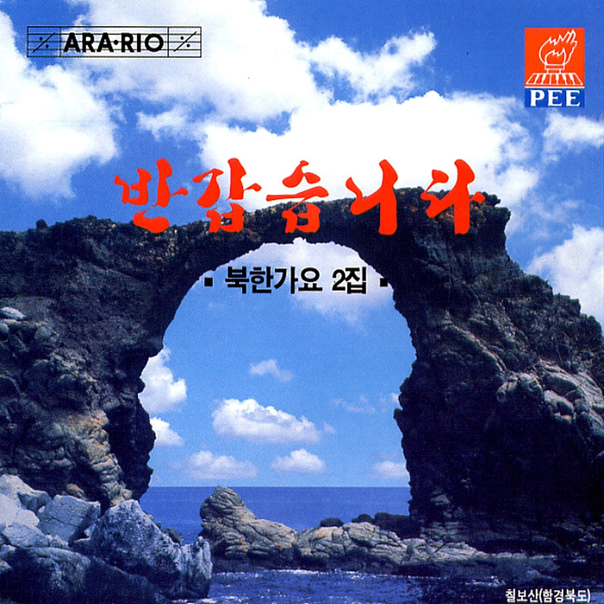
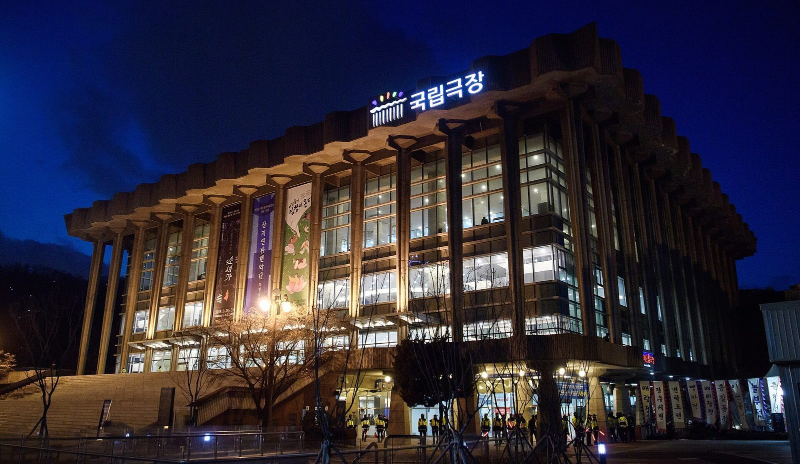
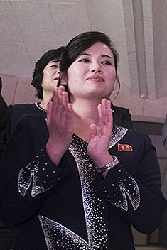
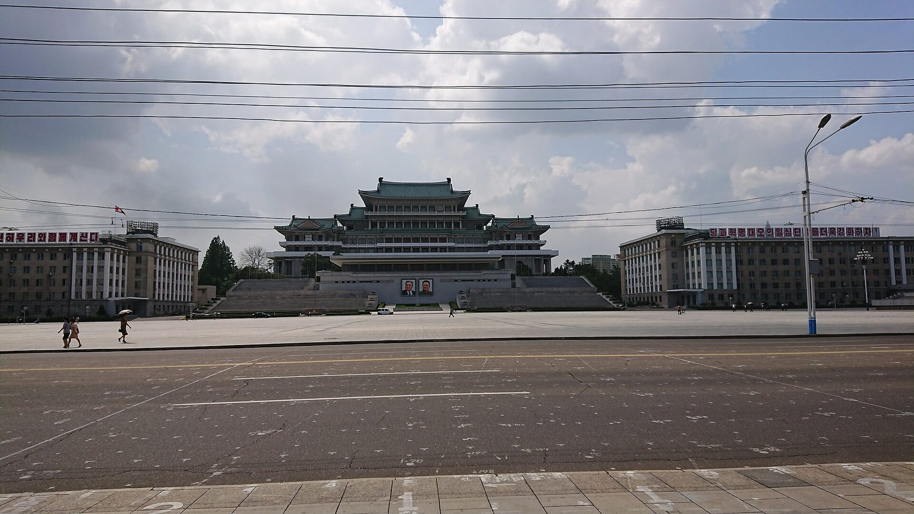

一个国家最流行的一支乐队，唱的是合成器和电吉他。他们最受欢迎的一首歌，叫〈见到你很高兴〉——它先在东京的剧场里唱给在日朝鲜人听，后来成了南北交流活动上的开场曲，最后，据日本共同社 2025 年 4 月的报道，它被移出了演出曲目。
1980 年代中期，合成器正在全世界流行。韩国民族文化大百科的记述是：金正日就「按照世界音乐发展的趋势，把电子音乐发展成朝鲜式的东西」作出指示——先在万寿台艺术团里组建一个电子音乐演奏分队积累经验，1985 年 6 月 4 日，这个分队独立成团[2]。英文维基百科同样记载乐团「从万寿台艺术团的电子音乐部分立出来，成为该国第一支电子流行组合」，成立日期同为 1985 年 6 月 4 日[1]。
成立之初，它的正式名称是「普天堡轻音乐团」（보천보경음악단），到 1992 年才改用今天通行的「电子乐团」[1]。这与豆瓣等中文条目「正式名称是普天堡轻音乐团」的表述一致。
它与王在山轻音乐团并称朝鲜两大电子音乐团。民族文化大百科这样描述他们的意义：「脱离过去进行曲式节奏的生活歌谣，以全新的节奏引起了巨大反响」，并且「至今仍是朝鲜居民喜爱的曲目」[2]。

关于解散时间，来源并不一致：英文维基百科记「活跃年份 1985–2015」，MusicBrainz 的艺人条目则记为 1985-06-04 至 2012 年终止。本页不作裁断，详见「来源分歧」。
「普天堡」不是平壤的地名，而是一场战斗的名字。
1937 年 6 月 4 日，一支抗日游击队越过鸭绿江，袭击了朝鲜北部普天堡的日本警察驻在所等设施。英文维基百科记载，日本方面的报告称指挥者是崔贤（최현），朝鲜官方史观则归于金日成；学术界对这场战斗的叙述同样存在分歧[4]。战斗的消息第二天就登上了各地报纸——当时的《东亚日报》《朝鲜日报》都在 6 月 6 日刊出了「普天堡被袭事件续报」「共产系兵匪越境袭来」的报道，这些版面今天仍可在维基共享资源上看到[4]。
登报带来的结果，是名字。据中文维基百科整理的当时《东亚日报》报道：该报因「孙基祯日章旗抹消事件」停刊后刚复刊不久，把这次袭击当作「事件新闻」做了大规模连续报道，朝鲜境内各大报纸也广为报道——「金日成之名也因此为朝鲜人所知」[28]。日本当局随即悬赏捉拿袭击指挥官金日成与崔贤（初为 2000 日元，后来对金日成一人的赏金提高到 2 万日元）[28]；同年 11 月 18 日，《京城日报》还登出过「金日成被满洲国军击毙」的假消息[28]。英文维基百科补充了更长的一段后果：日本方面此后加紧追剿，金日成 1940 年被迫退入苏联；1945 年他随苏军回到朝鲜时，「普天堡英雄」的名声帮他取得了民众的接受与支持；这场战斗直到 2003 年才第一次写进韩国的历史教科书[4]。
1985 年 6 月 4 日——距离那场袭击正好四十八年——乐团在平壤成立，并把这场战斗的名字放进了自己的团名[1][2]。韩国民族文化大百科同一条目也指出，乐团曾在 1990 年前后赴中国、日本等地巡演，「正是在日本巡演的过程中，它的实体被外界所知」[2]。
普天堡的声音，是朝鲜流行乐里的一次换挡。
民族文化大百科的表述是：乐团「以合成器等电子乐器为中心，混用钢琴等西洋乐器与传统乐器」，并设有专职的声乐、舞蹈演员和合唱团；在节奏与歌词之间，「依据朝鲜劳动党的文艺方针，更重视歌词」；同时「也会把各国流行音乐纳入曲目」[2]。
曲目构成可以在编号专辑里直接看到：第 12 卷《Korean Folk Songs 1》收〈阿里郎〉〈敦达里〉〈杨山道〉等民谣改编，第 22、23 卷是电影音乐和外国歌曲，第 28 卷是纯器乐[1]。英文维基百科还特别提到他们翻唱过 Modern Talking 的〈Brother Louie〉和 Neil Sedaka 的〈One Way Ticket〉[1]。

普天堡的台前，主唱全部是女歌手；编制里伴奏的乐手，则全部是男性。英文维基百科列出的八位 vocal——玄松月、李京淑、金光淑、李芬姬、赵锦花、全惠英、金贞女、尹惠英——全是女性，而合成器、钢琴、电子琴、吉他、贝斯、鼓、打击乐到指挥、作曲，无一例外全是男性[1]；中文维基百科的成员表干脆把歌手那一节的标题写成「女歌手」[25]。这一「女歌手在前、全男性器乐编制在后」的形式，是 1991 年赴日演出前整编定下的[1]。她们后来大多拿到了朝鲜的最高艺术头衔。


| 人物 | 身份 | 可核查的事实 |
|---|---|---|
| 李京淑 리경숙 / Ri Kyong-suk | 主唱 | 1970-01-01 生于平壤；1988 年加入乐团；1991 年随团赴日本巡演；〈见到你很高兴〉〈城市姑娘出嫁〉〈我的国家最好〉原唱；2016 年起在金元均音乐大学任教[5] |
| 金光淑 김광숙 / Kim Kwang-suk | 主唱 | 1964-01-22 生于平壤，1986 年入团，1988 年获功勋演员、1992 年获人民艺术家；2018-01-14 因心脏病去世，享年 53 岁；据 KCNA，金正恩送了花圈[6][18] |
| 玄松月 현송월 / Hyon Song-wol | 主唱（2000 年代初） | 据英文维基百科，曾为王在山轻音乐团与普天堡电子乐团歌手，代表作〈骏马姑娘〉（준마처녀，1999）；2012–2018 任牡丹峰乐团团长，2018 年起任三池渊管弦乐团团长[7][1] |
| 리종오 Ri Jong-o | 指挥 · 主要作曲家 | 1943–2016；据韩联社讣闻，1960 年毕业于平壤音乐舞蹈大学并留校任教，1979 年起任部队作曲家，1980 年代末起任普天堡作曲家兼指挥；〈见到你很高兴〉〈口哨〉等均出自他手；2016-11-08 因急性心肌梗死去世[3]。汉字表记未在权威来源中核实到，本页一律标注罗马字 |
在册成员的完整名单（含合成器、电吉他、贝斯、鼓、钢琴、电子琴、打击乐等分工）见英文维基百科「Known members」一节——该节自身标注「需要更多来源」，本页不整段转引[1]。
又译〈喜相逢〉／Bangapseumnida。MusicBrainz 记 2000 年官方发行《반갑습니다 [북한가요 2집]》第 1 轨为 208 秒（3:28）[13]；本片所用音源为 2015 年数字合集（archive.org [WEB FLAC]），实测 207.2 秒（3:27），成片以实测值为准。词曲：据韩联社与 Koryo Tours 为 리종오（Ri Jong-o）[3][11]；中文维基百科则记「由北韩歌手李京淑创作」[15]——见「来源分歧」。
这首歌是怎么诞生的。1991 年，普天堡电子乐团赴日本巡演，面向在日朝鲜人团体（总联）组织[1][3]。英文 namu wiki 的记述是：作曲家리종오当时希望「改变会场里生硬的气氛、更贴近在日朝鲜人」，于是写下了这首开场曲；用户可编辑来源，仅作参考[19]。KBS 世界引述共同社则记作「1991 年由普天堡电子乐团发表」[8]。可以确认的硬事实是：李京淑是原唱，1991 年首唱于日本[5][9]。

它为什么成立。这首歌的副歌只有一句话反复——「见到你很高兴」。澳大利亚 ABC 电台一档介绍朝鲜流行乐的节目把它单独拎出来讲：「副歌几乎就是『很高兴见到你』一遍遍地重复」，并评价它是这些歌里「政治色彩最淡的一首」[17]。Koryo Tours 把它列进「朝鲜卡拉 O K 七首必唱」的第一首，理由是「打破任何场合的冷场、让全场跟着合唱」[11]。一首歌的旋律简单到任何人开口就能跟，而这正是它在各种官方场合被反复选中的原因——韩国 KBS 的专题节目说，南北音乐交流活动的曲目单里，「〈见到你很高兴〉常被当作开场曲」[21]。
歌词。三段歌词都从「동포여러분 형제여러분」（同胞们、兄弟们）起头，第一段讲重逢，第二段讲握手，第三段讲爱国。第 2 段里有一句「통일 잔치날도 멀지 않네」（统一节庆之日也不远了）。据日本共同社 2025 年 4 月 29 日的报道，这首歌后来被排除在演出曲目之外[8]——报道未说明原因，也未给出禁演的生效日期，本页不作因果推断。



关于乐团后来的去向，公开来源都很薄，而且互相并不完全对得上——但把几条线索拼起来，能看出一条相当清楚的轨迹：它不是某一天被解散的，是被拆散、分流，最后只剩下一个名字偶尔被重新启用。
转折点大致在 2007 年前后。中文维基百科的记述是：2007 年，国内保守派老干部对乐团的演出风格不满，认为它「不符合朝鲜的民族情感」，乐团在朝鲜音乐界的影响随之大减；此后大批成员转入王在山轻音乐团，以及 2009 年新成立的银河水管弦乐团[25]。⚠️ 这条（尤其是「保守派不满」的具体说法）目前只在中文维基百科见到，英文维基与其他来源都未载，本页按单一来源处理，读者请自行判断。
「分流」有独立的学术佐证。芬兰于韦斯屈莱大学 Pekka Korhonen 与 Werner Koidl 关于银河水管弦乐团兴衰的论文写道：银河水「最早的根源，是被称作〈银河水〉的一群年轻女歌手——普天堡电子乐团下属的一个分支，朝中社在 2008 年 2 月 8 日首次提及」；银河水管弦乐团 2009 年成立，2012 年在巴黎演出，2013 年 8 月被相当突然地解散，并成为随后一连串清洗的开端[26][27]。同一篇论文还提到：这里说的「牡丹峰」并不是 2012 年成立的牡丹峰乐团，而是一个小型女声合唱组——「最初是普天堡电子乐团的一个项目」，银河水 2009 年成立后，它开始与银河水同台演出；后来成为金正恩夫人的李雪主，当年就常在这个组里[26]。
换句话说，朝鲜此后每一个「国家流行乐团」的人才，多少都从普天堡这条线上出来过：银河水小组（2008）→ 银河水管弦乐团（2009）→ 牡丹峰乐团（2012）→ 三池渊管弦乐团（2018）。乐团的名字消失了，人和机器没有。
「事实上的解散」有一个很朝鲜式的标记。中文维基百科记载：2011 年 2 月起，朝鲜中央电视台播出《回忆之歌——普天堡电子乐团曲目选》，播的是全盛时期的演出录像，到 6 月结束——播旧录像，等于宣告它已成过去[25]。此后乐团又以原班人马重聚过：2015 年 2 月的《回忆之歌》演唱会，以及 2015 年 10 月 11 日建党 70 周年演出《伟大的党，玫瑰色的朝鲜》，李京淑都在其中[5]。
还有一个人是被「抹掉」的。合成器手金元日（김원일）在约 2009 年重播的演出里被用技术手段抹去影像，此后再未被列为成员——中英文维基百科都只写「因某种未知原因」[1][25]。原因至今没有可靠来源，本页不作猜测。
另一个「消失」是假新闻。2013 年 8 月，韩媒一度报道玄松月（传为金正恩前女友）等银河水、王在山乐团成员被处决；2014 年春天她出现在朝鲜电视上，好好的，其他被传死亡的音乐人也陆续被看到[7]。她后来当了牡丹峰乐团团长、三池渊管弦乐团团长，2018 年 2 月带团到韩国演出——开场曲就是〈见到你很高兴〉。
可以确认的两条人事消息是：主要作曲家兼指挥李钟午（리종오 / Ri Jong-o）于 2016 年 11 月 8 日去世，韩联社称他为「朝鲜传奇作曲家」，并指他的〈见到你很高兴〉与〈口哨〉都是韩国人也知道的歌[3]；歌手金光淑于 2018 年 1 月 14 日去世，享年 53 岁，据 KCNA，金正恩送了花圈[6][18]。
而 2012 年之后，朝鲜新的「国民天团」是牡丹峰乐团——英文维基百科在牡丹峰乐团条目里写道：新式乐团的组建，可以视为对王在山轻音乐团、普天堡电子乐团这类轻音乐团「已经不再流行」的承认[7]。

李京淑演唱的同名电影主题曲。韩联社、英文维基百科都把它列在她的代表作里[3][5]；Koryo Tours 的评价是「节奏真的很抓人，会让你想抢过话筒假装会唱」[11]。
同由李京淑演唱。Koryo Tours 说这是朝鲜的散场曲——「朝鲜人绝不会在聚会中途点这首歌，它是告别时才唱的」[11]。
本页选择为编辑判断，非榜单结论：〈见到你很高兴〉的「最经典」来自多个来源的共同指认（韩联社、KBS、ABC、Koryo Tours、民族文化大百科），但没有任何一份权威榜单对普天堡电子乐团的作品做过排名。
资料短片与〈见到你很高兴〉全曲等长（3:27，207.2 秒，音源实测），画面全部用真实史料——团徽、1937 年两家报纸的普天堡袭击报道版面、六张专辑封面、三池渊管弦乐团首尔演出照、平壤金日成广场。解说共 9 段：从团名、声音、成员，到 1991 年歌的诞生、传入韩国，再到乐团本身的去向（成员分流、2015 年重聚、2016/2018 两位核心人物去世）与 2023 年歌曲被拿掉。配音版正片待解说稿定稿后制作；本站嵌入的是无声资料版。
| 事项 | 分歧 |
|---|---|
| 词曲作者 | 韩联社讣闻与 Koryo Tours 记为乐团指挥兼作曲家 리종오（Ri Jong-o）[3][11]；英文 namu wiki 同[19]；中文维基百科记「由北韩歌手李京淑创作」[15]。本页取 리종오（新闻源更硬），并如实并列。 |
| 首演年份 | 「1991 年在日本巡演首演」为多数说法（韩联社、KBS、Korea Daily、中文维基）[3][8][15]；ABC 电台节目则记「为 1989 年青年运动会而写并发表」[17]。本页取 1991。 |
| 作曲家汉字表记 | 리종오的汉字写法未在权威来源中核实到（中文网络歌曲页有写作「李宗吴」[22]）。本页不采用，一律标罗马字。 |
| 乐团解散时间 | 中文维基百科记 2011 年 2–6 月播出《回忆之歌》选辑「相当于宣告事实上解散」[25]；英文维基百科记活跃期 1985–2015[1]；namu wiki 记 2008 年解散、2012 年发行第 182 辑后停止[19]；MusicBrainz 记至 2012[13]；民族文化大百科记「1990 年代以后活动转疏，2008 年起另有活动」[2]。本页标题暂写「1985–今」，不作裁断——可以确认的是 2015 年仍有重聚演出[5][25]。 |
| 2015 年重聚月份 | 英文维基百科李京淑条目记 2015 年 2 月《回忆之歌》演唱会[5]；中文维基百科记 2015 年 3 月播出《回忆之歌》[25]。两处指的应是同一次重聚。 |
| 2011 年《回忆之歌》与「保守派不满」 | 两条均仅见于中文维基百科[25]，未在英文维基、学术论文（[23][26]）或其他来源中交叉到。本页保留并已明确标注为单一来源，不作为结论。 |
| 玄松月出生年份 | 普天堡条目成员名单记 1976[1]；玄松月本人条目记 1977（引韩国国家情报院说法）[7]。本页不写年份。 |
| 金光淑享年 | 英文维基百科按 1964-01-22 生、2018-01-14 卒记 53 岁[6]；Explore DPRK 标题写 55 岁。本页取 53。 |
| 金光淑葬礼报道日期 | 英文维基百科引 KCNA 报道日期为 2018-01-14[6]；KCNA Watch 的存档时间戳为 2018-01-15。差异仅在存档时间，不影响事实。 |
| 禁演报道时间 | 共同社报道经 KBS 世界转引，该页 Written / Updated 均为 2025-04-29[8]；namu wiki 记「2025 年起禁演」[19]；旅游博客 Young Pioneer Tours 写作「2023 年…日本媒体报道被禁」[31]，与共同社原报道时点不符，属二手误记，本页不采。 |
| 是否「2023 年后从未演过」 | ⛔ 不成立，本页不这样写。所有来源的口径都只到「演出」层面：KBS「excluded from performances」「no longer heard at North Korean restaurants in China」[8]；中央日报中文网「已被禁止在正式场合中演唱」「中国境内的北韩餐厅亦停止表演」[31]；Korea Daily「removed from performance stages」[9]。没有一条给出生效日期，也没有一条覆盖「任何场合都无人再唱」。本页只写「被排除在演出曲目之外」「不再出现在朝鲜的舞台上」。 |
| 歌词文本异文 | 第 2 段该句，Koryo Tours 转写为「조군위한 마음 뜨거우니」[12]；中文歌曲页作「조국이 한마음 뜨거우니」[22]。两处含义不同（「为你们/为祖国」），本页歌词栏只引第 1 段以避开。 |
| 普天堡战斗的伤亡 | 两套口径无法对齐：据当时《东亚日报》的报道，驻在所当晚在岗 5 名警察全部逃走、无一伤亡，死者是一名巡查的幼子及其母亲，翌日追击战警察死 7 人、伤 14 人[28]；百度百科（朝鲜方面叙述）记「击毙日本警察 5 名，缴获轻机枪 1 挺、步枪 6 支」[30]。本页不采信任何一套数字。 |
| 乐团的「指挥」是谁 | 韩联社英文讣闻称리종오「served as the composer and conductor」，EverybodyWiki 与 namu wiki 同样记作 composer · conductor[3]；但中文维基百科的成员表把「指挥」一栏单列给金延水（김연수，1961–）[25]，作曲家栏才是李钟午。两条不冲突（可由多人分任），但本页不写「乐团唯一的指挥」。解说稿按韩联社口径写「指挥兼作曲」。 |
| 李钟午的汉字表记与生年 | 汉字「李钟午」取自中文维基百科普天堡电子乐团条目作曲家栏[25]（该栏记 1944 年生）；namu wiki 与 EverybodyWiki 记 1943-11-07 生，韩联社讣闻称 2016 年去世时「享年 73」亦指向 1943。本页两说并存，不写具体生年。 |
| 是否有男性主唱 | 英文维基百科成员表中 8 位 vocal 全部为女性、器乐与创作岗位全部为男性[1]；中文维基百科歌手一节标题即「女歌手」[25]；学术与百科综述称其形式为「女歌手在前、全男性器乐编制在后」[1]。唯一提到男性出声的是一条视频站投稿的二手转述，来源不足，本页不采用。⛔ 因此本页不写「从来没有男性唱过歌」，只写「台前主唱全是女歌手、伴奏全是男乐手」。 |
本页与短片全部使用真实素材，未使用任何 AI 生成影像。版权仍归原权利人；本项目为非商用个人阅读，使用时均已标注来源。


.jpg){kind=link}